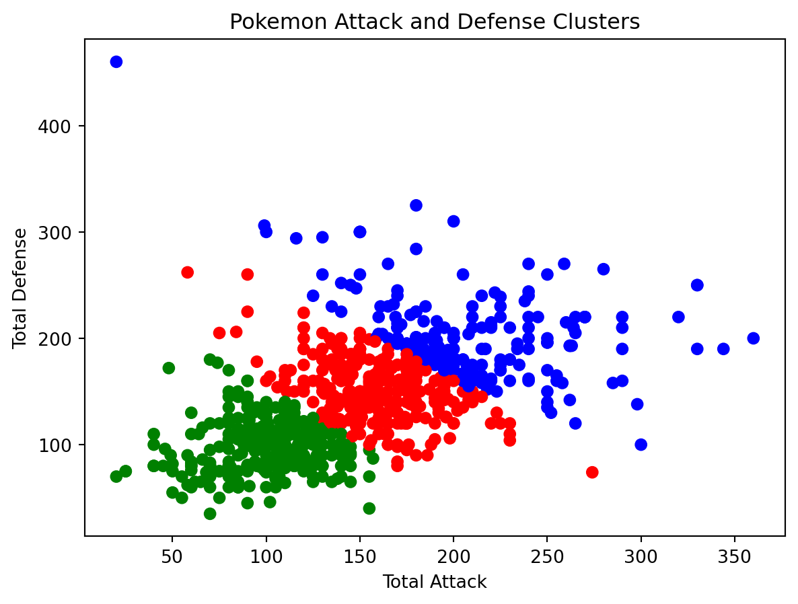
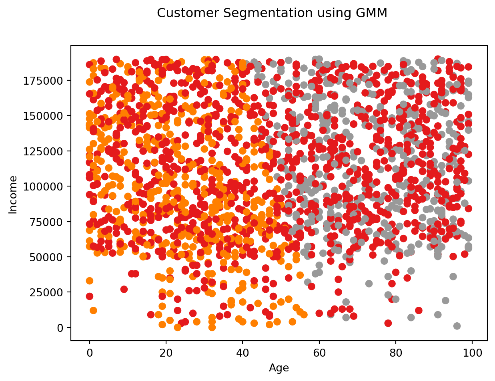

from sklearn.cluster import KMeans
import pandas as pd
import matplotlib.pyplot as plt
import numpy as npSupervised Learning vs. Unsupervised Learning
Before we talk about clustering, we must address some integral concepts related to it: supervised and unsupervised learning.
Supervised learning is a machine learning technique that is used to train/teach a machine using labeled data. Labeled data implies that the data is already tagged with the correct answer. Teaching the machine on labeled data allows for future data to be correctly predicted. Under the umbrella of supervised learning, there are 2 categories of algorithms:
- Classification: Output variable is a category, so we are looking to categorize the output
- Regression: Output variable is a real value, so we are looking to predict the value of the output
Unsupervised Learning is a machine learning technique that uses used to train/teach a machine using that isn’t labeled or classified. The machine is now responsible for grouping the data according to similarities in characteristics without prior training. This is much harder because there is no “teacher” here, meaning the machine is tasked with finding the hidden structure in the unlabeled data. Under the umbrella of unsupervised learning, there are 2 categories of algorithms:
- Clustering: Grouping of cata to find similarities
- Association: Discover riles that describe large portions of data
| Supervised Learning | Unsupervised Learning | |
|---|---|---|
| Input | Labeled Data | Unlabeled, uncategorized |
| Accuracy | Highly accurate | Less acurate |
| Output | Categorized or real values | Groupings |
What is Clustering?
As mentioned, clustering is a type of unsupervised learning. Here, we are grouping data so that each group, or cluster, exhibits similar qualities. Ultimately, the goal of clustering to uncover intrinsic patterns and structures within data that can be used for analysis.
How Does Clustering Work?
Algorithms that are focused on clustering measure similarity between data points across a set of features. Features should be continuous variables but can be categorical. However, categorical data needs special encoding. Data points in the cluster that appear close to each other based on the features are grouped together, which the data points that are far away are separated into different clusters. There are several approaches to clustering, including:
- K-Means: Grouping of data points in K clusters by minimizing the intra-cluster sum-of-squares. This requires setting the number of clusters up front, as we’ll see in the application section.
- Hierarchial: Hierarchy of clusters are built iteratively
- DBSCAN: groups dense regions of points and considers the sparse areas as outliers. Intuitively detects arbitrary cluster shapes.
- Gaussian Mixture Models: Fits data as a mixture of Gaussian distributions where clusters are modeled using mean and covariance parameters.
Clustering Use Cases
So when is it a good time to use clustering? As mentioned, the best time to use clustering would be when we have data that is unlabeled. The following are more specific reasons to use clustering
- Exploratory Data Analysis: Clustering can help to reveal intrinsic groups and patterns in data without prior knowledge. It can open the door for further analysis by uncovering segements that were previously unknown
- Customer Segementation: Cluster customers based on certain attributes like demographics, purchasing beahvior, and more to achieve targeted marketing
- Social Network Analysis: Identify communities within a social network by clustering nodes based on connectivity and usage patterns
- Anomaly Detection: Detect anomalous data points that might not fit into a cluster to detect potential fraud or network attacks.
K-Means Clustering
K-Means is one of the most popular clustering algorithms that is used for discovering intrinsic groups in unlabeled data. The
K-Means partitions a dataset into a predefined number of clusters, \(k\). It does this by minimizing the sum of distances between each data point and its assigned centroid, also known as the within-cluster sum of squares (WCSS).
Process of K-Means Clustering?
- Select \(k\) initial centroids for the clusters
- Assign each data point to its closest centroid point based on Euclidean distance
- Recompute the centroids as the mean of all data points assigned to that cluster
- Repeat steps 2-3 until convergence, meaning the centrods no longer change between iterations
Choosing the Number of Clusters \(k\)
When choosing the number of clusters for K-Means it’s important to choose the right number of clusters because it affects the quality of clustering.
You could simply try different integer values to represent \(k\) through a process of guessing-and-checking. Then, you could examine which one of \(k\) values produces clustering visuals that makes the most sense for your data.
Another way to select \(k\) is the elbow method, which involves plotting the WCSS vs. \(k\). The part of the curve that is shaped like an elbow will contain what is likely a good choice for the \(k\)

There is also the silhouette method, which measures how well each data point fits into its assigned cluster compared to other clusters and selects the \(k\) with the highest average silhouette score.
Example of K-Means Clustering
We can actually apply K-Means clustering in Python. Similar to the last post, I want to demonstrate how that can be done in code using a dataset of Pokemon from Generations 1-7.
First we can start off by importing the libraries that are needed for the code. In addition to the same libraries from the previous post, pandas and matplotlib, we are going to import numpy as well as KMeans from sklearn.cluster.
numpy will simply be used for transforming a python array of colors into something that can be used for designating clusters to be of certain colors.
KMeans will be used for the actual clustering.
We are then going to want to load our data. Again, it’s from the Pokemon dataset and it’s comma-separated.
data = pd.read_csv("../../datasets/pokemon.csv", sep=",")
data| attack | base_egg_steps | base_happiness | base_total | capture_rate | defense | experience_growth | height_m | hp | name | percentage_male | pokedex_number | sp_attack | sp_defense | speed | type1 | type2 | weight_kg | generation | is_legendary | |
|---|---|---|---|---|---|---|---|---|---|---|---|---|---|---|---|---|---|---|---|---|
| 0 | 49 | 5120 | 70 | 318 | 45 | 49 | 1059860 | 0.7 | 45 | Bulbasaur | 88.1 | 1 | 65 | 65 | 45 | grass | poison | 6.9 | 1 | 0 |
| 1 | 62 | 5120 | 70 | 405 | 45 | 63 | 1059860 | 1.0 | 60 | Ivysaur | 88.1 | 2 | 80 | 80 | 60 | grass | poison | 13.0 | 1 | 0 |
| 2 | 100 | 5120 | 70 | 625 | 45 | 123 | 1059860 | 2.0 | 80 | Venusaur | 88.1 | 3 | 122 | 120 | 80 | grass | poison | 100.0 | 1 | 0 |
| 3 | 52 | 5120 | 70 | 309 | 45 | 43 | 1059860 | 0.6 | 39 | Charmander | 88.1 | 4 | 60 | 50 | 65 | fire | NaN | 8.5 | 1 | 0 |
| 4 | 64 | 5120 | 70 | 405 | 45 | 58 | 1059860 | 1.1 | 58 | Charmeleon | 88.1 | 5 | 80 | 65 | 80 | fire | NaN | 19.0 | 1 | 0 |
| ... | ... | ... | ... | ... | ... | ... | ... | ... | ... | ... | ... | ... | ... | ... | ... | ... | ... | ... | ... | ... |
| 796 | 101 | 30720 | 0 | 570 | 25 | 103 | 1250000 | 9.2 | 97 | Celesteela | NaN | 797 | 107 | 101 | 61 | steel | flying | 999.9 | 7 | 1 |
| 797 | 181 | 30720 | 0 | 570 | 255 | 131 | 1250000 | 0.3 | 59 | Kartana | NaN | 798 | 59 | 31 | 109 | grass | steel | 0.1 | 7 | 1 |
| 798 | 101 | 30720 | 0 | 570 | 15 | 53 | 1250000 | 5.5 | 223 | Guzzlord | NaN | 799 | 97 | 53 | 43 | dark | dragon | 888.0 | 7 | 1 |
| 799 | 107 | 30720 | 0 | 600 | 3 | 101 | 1250000 | 2.4 | 97 | Necrozma | NaN | 800 | 127 | 89 | 79 | psychic | NaN | 230.0 | 7 | 1 |
| 800 | 95 | 30720 | 0 | 600 | 3 | 115 | 1250000 | 1.0 | 80 | Magearna | NaN | 801 | 130 | 115 | 65 | steel | fairy | 80.5 | 7 | 1 |
801 rows × 20 columns
Recall that clustering requires features to be continuous variables. In this dataset, we have a couple of different continuous variables, such as:
attackdefensebase_totalsp_attacksp_defenseheight_mpercentage_malespeedweight_kg
Some of these variables are kind of useless though because they aren’t going to give us anything interesting. Instead we want to focus on the stats associated with each Pokemon. More specifically, we want to focus on
attackdefensesp_attacksp_defense
Honestly, I had trouble trying to decide on whether I wanted to cluster based on attack and defense or sp_attack and sp_defense. As a result, I ended up combining them in a way so that attack and sp_attack add up to total_attack and defense and sp_defense add up to total_defense.
data['Total Attack'] = data['attack'] + data['sp_attack']
data['Total Defense'] = data['defense'] + data['sp_defense']Here we are storing data for total_attack and total_defense into variable X
x_val = 'Total Attack'
y_val = 'Total Defense'
values = [x_val, y_val]
X = data[values] After we have our data, we need to determine the number of clusters, or \(k\). This is up to you, but I wanted to cluster it by 3 so we can have clusters of weak, intermediate, and strong.
kmeans = KMeans(n_clusters=3)We then need to compute the K-Means clusters by using the fit() function. Here we supply the method with the data that was gathered earlier.
kmeans.fit(X)KMeans(n_clusters=3)In a Jupyter environment, please rerun this cell to show the HTML representation or trust the notebook.
On GitHub, the HTML representation is unable to render, please try loading this page with nbviewer.org.
KMeans(n_clusters=3)
We can then store the labels of the cluster into labels so that it can be used for applying colors to each cluster with the colormap array
labels = kmeans.labels_
colormap = np.array(['red', 'green', 'blue'])Afterwards, we are going to actually plot a scatter graph of the clustered data, using total_attack and total_defense as features
plt.scatter(X['Total Attack'], X['Total Defense'], c=colormap[labels])
plt.title('Pokemon Attack and Defense Clusters')
plt.xlabel('Total Attack')
plt.ylabel('Total Defense')
plt.show()
In the above clustering, data points labeled in red are considered “weak”, green are considered “intermediate”, and blue is considered “strong.
I’m going to be replaying Pokemon games over the winter break so I’m hoping this scatter will give me an indication as to what Pokemon I should catch!
Gaussian Mixture Models (GMMs)
Gausian Mixture Models (GMMs) are probabilistic models that assumes data points are generated from a mixture of Gaussian distributions. GMMs are a popular clustering algorithm with applications such as density estimation, data compression, and more.
How Does GMMs Work
A GMM models each cluster as a Gaussian distribuion, characterized by a mean and covariance matrix. The complete model is a weighted sum of the component Gaussian densities.
The GMM fitting process determines the parameters of each Gaussian as well as the mixture weights. This is done through iterative expectation-maximiation algorithm that converges to find the maximum likelihood estimates.
The number of Gaussian components corresponds to the number of clusters. Choosing the right number of clusters is important to avoid underfitting or overfitting.
Example of GMM
Here we are importing a couple of different libraries that have been used before. We are importing GaussianMixture in order to create Gaussian Mixture Models.
import pandas as pd
from sklearn.mixture import GaussianMixture
import matplotlib.pyplot as pltThis time, I wanted to a different dataset because the one with Pokemon didn’t seem to be creating clusters very well. The dataset being imported consists of customer data, including information such as
GenderAgeAnnual Income ($)Spending Score (1-100)ProfessionWork ExperienceFamily Size
customer_data = pd.read_csv('../../datasets/Customers.csv')I am particularly interested in using variables that are continuous, which are Age, Annual Income, and Work Experience. We are using these variables as features for segmentation
selected_features = ['Age', 'Annual Income ($)', 'Work Experience']Here we are preprocessing by extracting and scaling the selected features
customer_features = customer_data[selected_features]
customer_features = (customer_features - customer_features.mean()) / customer_features.std()We can create a GMM by creating 3 clusters of the data and then fitting it based on the preprocessed data.
We are then predicting the labels and then assigning it to a column called Cluster
num_clusters = 3
gmm = GaussianMixture(n_components=num_clusters)
gmm.fit(customer_features)
cluster_labels = gmm.predict(customer_features)
customer_data['Cluster'] = cluster_labelsFinally, we plot the data on a scatterplot using Age and Annual Income ($).
plt.scatter(x=customer_data["Age"], y=customer_data["Annual Income ($)"], c=cluster_labels, cmap="Set1")
plt.xlabel("Age")
plt.ylabel("Income")
plt.suptitle('Customer Segmentation using GMM')
plt.show()